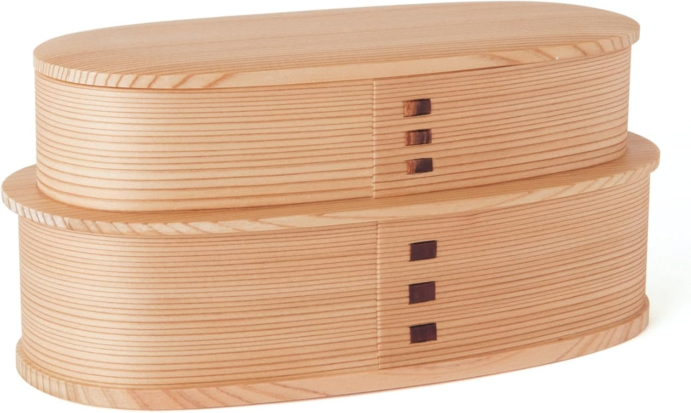
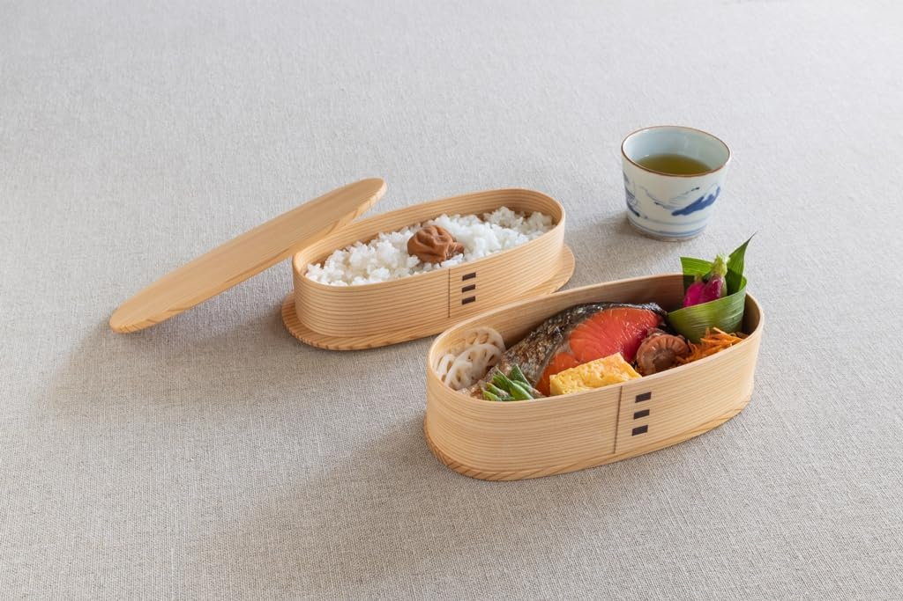

Look closely at the seam on a real Odate magewappa and you won't find a drop of glue or a single nail anywhere in the wood. The two stacked tiers aren't strapped together either. Here's what's actually doing the work.
Each tier starts as a single thin sheet of Akita cedar, shaved down to a fraction of its original thickness. That sheet is soaked in hot water until it's pliable, then bent by hand around a wooden mold while still hot -- there's no mold-and-glue lamination involved, just one continuous strip curved into an oval. Once it's dried into shape, the overlapping seam is fixed in place by stitching it with thin strips of wild mountain cherry bark, a technique called sakura-kawa toji (cherry-bark binding). That's the traditional joinery method behind the small dark rectangular fasteners running down the seam -- the exact tone and finish can vary piece to piece, but the no-glue, no-nail principle holds across genuine Odate magewappa production.

Plenty of two-tier bento boxes hold their stack together with an external strap or rubber band. This one doesn't need one: the base of the top tier is cut to nest directly into the rim of the bottom tier, a construction the maker's own listing calls ireko (nested/入子) construction. The weight of the lid and the snugness of that rim-to-rim fit is what keeps the two halves seated -- it's a structural choice, not an accessory you can lose.
This style of bentwood container is called Odate magewappa, named for Odate, a city in Akita Prefecture surrounded by some of Japan's best natural cedar forest. The craft became an established industry in the late 17th century, when the Satake-Nishi family, who governed Odate Castle, encouraged lower-ranking samurai to make magewappa as a side trade -- turning the region's abundant cedar into steady income during lean years. The technique earned national recognition in 1980, when it was designated a Japanese Traditional Craft.
As an Amazon Associate, I earn from qualifying purchases.
This page contains an affiliate link — if you buy through it, it costs you nothing extra and helps support this site.